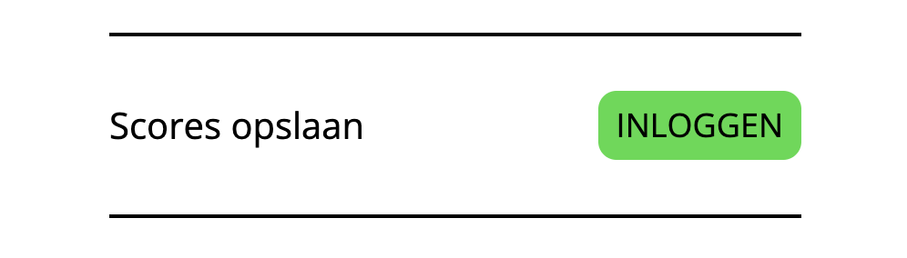
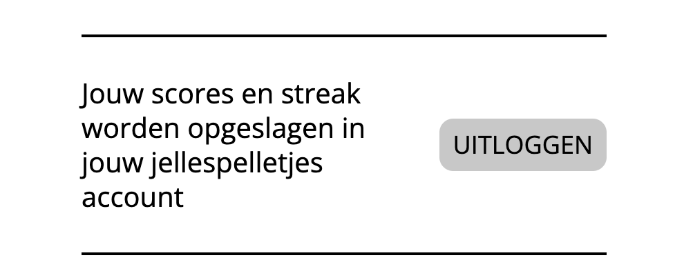

Woordle
Zes beurten om het woord te gokken. Elke dag een nieuwe puzzel.
SpelenSudokudo
Elke dag een nieuwe sudoku. Los hem snel op en deel je tijd!
SpelenElke dag een nieuw spelletje en iedereen krijgt dezelfde puzzel.
Zes beurten om het woord te gokken. Elke dag een nieuwe puzzel.
SpelenElke dag een nieuwe sudoku. Los hem snel op en deel je tijd!
SpelenMet een jellespelletjes account blijft jouw streak opgeslagen, ook als je naar een andere browser gaat, of je browser data wordt een keer opgeschoond.
Zo kan je dus zeker weten dat jouw streak veilig is!
Bij alle jellespelletjes kan je in het ... menu inloggen, en je hoeft niet eens een wachtwoord te onthouden. Zorg dat je elke keer hetzelfde email adres invult zodat je weer door kan gaan met je streak.
Als je uitgelogd bent zie je dit:

Als je ingelogd bent zie je dit:
